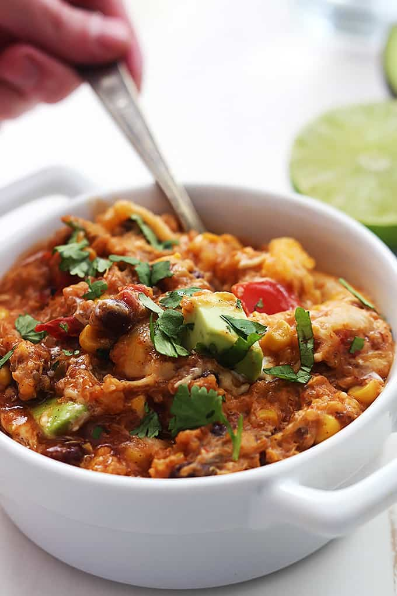

Enchilada Quinoa

This enchilada dish comes together quickly and freezes well for a delicious protein-packed side dish.
This recipe couldn't be easier - just add the ingredients and heat for long enough to cook the quinoa. And can't forget to top with cheese. Voila!
Ingredients
- 1 can black beans
- 1 can yellow corn
- 2 cans red enchilada sauce
- 1 can diced fire roasted tomatoes
- 4oz cream cheese
- 1 cup uncooked quinoa
- 1/2 cup water
- 1 cup shredded Mexican style cheese
Steps
- Combine all canned ingredients and water in a large pot and bring to a simmer.
- Add quinoa and simmer for 15 minutes or until quinoa has softened.
- Stir in cream cheese until fully dissolved.
- Top with shredded cheese and serve.